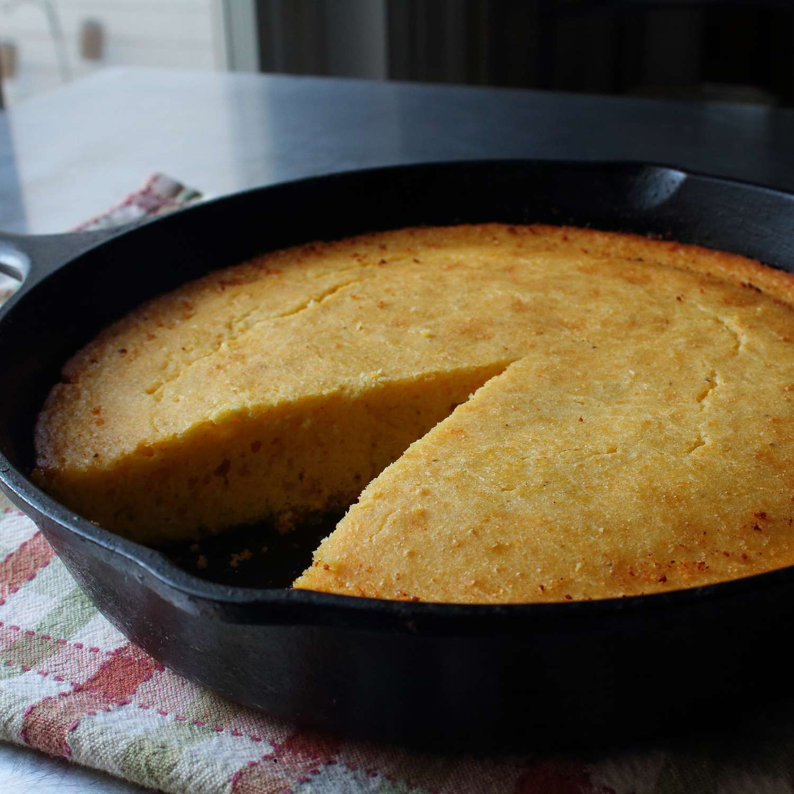

Cornbread

Iron Skillet Cornbread
Description
Cronbread made in an iron skillet is the perfect side to
serve with your southern soup and chili recipes. While it
is inexpensive and easy to make, no one at the table will
be able pass on a slice of this cornbread.
Ingredients
- 1/2 cup unsalted butter
- 1 1/2 cups buttermilk
- 1 cup cornmeal
- 2 large eggs
- 3 tablespoons honey, or to taste
- 1/2 teaspoon fine salt
- 1 pinch cayenne pepper
- 1 cup self-rising flour
Steps
- Preheat the oven to 400 degrees F (200 degrees C).
- Whisk buttermilk, cornmeal, eggs, honey, salt, and cayenne
pepper together in a large bowl. Add flour and 1/2 of the
butter from the pan; whisk again. Pour batter over remaining
butter in the skillet.
- Bake in the preheated oven until a toothpick inserted into the
center comes out clean, about 25 minutes. Let cool briefly
before slicing.